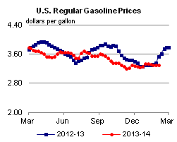
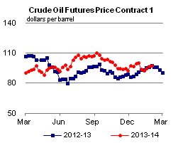

Released: February 5, 2014
Next Release: February 12, 2014
Fuel-switching from natural gas to oil helps moderate Northeast winter natural gas demand
Recent extreme cold weather in the Northeast boosted natural gas demand beyond the capacity of the natural gas delivery system that supplies New York and New England. As a result, the spot price of natural gas rose above the price of distillate and residual fuel oil (on an energy-equivalent basis) in the Northeast on some days this winter (Figure 1). Because decisions regarding the dispatch of electric generation units are generally based on variable operating costs, the use of oil for power generation can increase when natural gas prices are higher than distillate or residual fuel prices in cases where fuel-switchable or oil-only units are available to operate.
{kind=link}
In recent decades, oil-fired generation has not been economically competitive for power generation, and the share of power generated using oil has dropped from 17% in 1973 to less than 1% in recent years. However, about 30% of the electric generating capacity in New York and New England is able to switch between natural gas and oil (Figure 2). An additional 7 gigawatts of capacity in the region (representing 9% of the total) is oil-fired only. As a result, oil-fired generation can still play an important economic and reliability role when natural gas prices spike. Last month, the Independent System Operator New England (ISO-NE) estimated that 24% of overall generation in its area was generated using oil on January 23-25.
In New York City and other areas heavily dependent on natural gas for heating, regulators can curtail the use of natural gas by other customers with the capability to switch fuels or otherwise cut their consumption, including power companies, industrial customers, and certain commercial and residential buildings. The risk of gas service curtailment creates an incentive (if not a necessity) for power generation units with ability to run on oil to keep supplies of that fuel on hand.
{kind=link}
Because of concerns about the deliverability of natural gas in New England after the 2012-13 winter, ISO-NE instituted in September 2013 a temporary reliability program for this winter that included:
-
• incentives to ensure that owners/operators of oil-fired generators increase their fuel inventories;
• payments to dual-fueled units for testing their capacity to use oil;
• some changes to the market-monitoring procedures aimed at increasing the flexibility of dual-fueled
units; and
• a demand-response program that reduces the amount of electricity needed during peak hours.
This program likely contributed to the recent 2-million-barrel build in total petroleum liquids inventories held by electric generators in the Northeast since July 2013 (Figure 3). Most of the increase was in residual fuel oil, the type of fuel oil used by large steam electric plants. The rise in fuel oil inventories ahead of this winter marked a reversal of the downward trend seen in previous years. Electric generators' fuel oil inventories in the Northeast were nearly 13 million barrels at the end of 2006, and declined steadily until mid-2013. During the recent extreme spike in the price of natural gas in New England, these inventories enabled generators to meet electricity demand with lower-cost fuel oil. Absent infrastructure changes that significantly increase the capacity of natural gas suppliers to meet peak winter loads in the region, petroleum will likely remain a viable alternative fuel during future periods of extreme cold weather.
{kind=link}
Gasoline price increases while diesel fuel decreases
The U.S. average retail price of regular gasoline decreased less than one cent to $3.29 per gallon as of February 3, 2014, 25 cents lower than last year at this time. Prices increased one cent in the Midwest to $3.23 per gallon, and rose less than a cent on the West Coast, remaining at $3.49 per gallon. The East Coast price decreased two cents to $3.36 per gallon, and prices dropped one cent on the Gulf Coast and in the Rocky Mountains, to $3.08 per gallon and $3.13 per gallon, respectively.
The national average diesel fuel price was up five cents to $3.95 per gallon, seven cents lower than last year at this time. Prices increased in all regions of the nation except the Rocky Mountains, where the price declined less than a penny to remain at $3.86 per gallon. The East Coast price was $4.07 per gallon and the Midwest price was $3.94 per gallon, both up seven cents from last week. The West Coast price gained two cents to $3.99 per gallon, while the Gulf Coast price increased less than one cent to $3.78 per gallon.
Propane inventories fall
U.S. propane stocks fell by 0.8 million barrels to end at 30.8 million barrels last week, 24.0 million barrels (43.8%) lower than a year ago. Gulf Coast inventories decreased by 1.0 million barrels while Midwest inventories rose by 0.8 million barrels. East Coast inventories decreased by 0.5 million barrels and Rocky Mountain/West Coast inventories decreased by 0.2 million barrels. Propylene non-fuel-use inventories represented 12.2% of total propane inventories.
Residential heating oil price increases while propane price decreases
Residential heating oil prices increased almost 7 cents per gallon to reach a price of $4.24 per gallon during the period ending February 3, 2014. This is 15 cents per gallon higher than last year's price at this time. Wholesale heating oil prices increased nearly 5 cents per gallon last week to $3.44 per gallon.
The average residential propane price decreased 12 cents per gallon last week to $3.89 per gallon, almost $1.59 per gallon higher than the same period last year. Wholesale propane prices decreased 84 cents per gallon to a price just shy of $2.71 per gallon as of February 3, 2014.
Text from the previous editions of This Week In Petroleum is accessible through a link at the top right-hand corner of this page.
|  | |||||||
| Retail Data | Change From Last | Retail Data | Change From Last | ||||
| 02/03/14 | Week | Year | 02/03/14 | Week | Year | ||
| Gasoline | 3.292 | Heating Oil | 4.241 | ||||
| Diesel Fuel | 3.951 | Propane | 3.891 | ||||
|  | |||||||||||||||||||||||||||
|
|||||||||||||||||||||||||||
| *Note: Crude Oil Price in Dollars per Barrel. | |||||||||||||||||||||||||||
| Stocks Data | Change From Last | Stocks Data | Change From Last | ||||
| 01/31/14 | Week | Year | 01/31/14 | Week | Year | ||
| Crude Oil | 358.1 | Distillate | 113.8 | ||||
| Gasoline | 235.0 | Propane | 30.842 | ||||